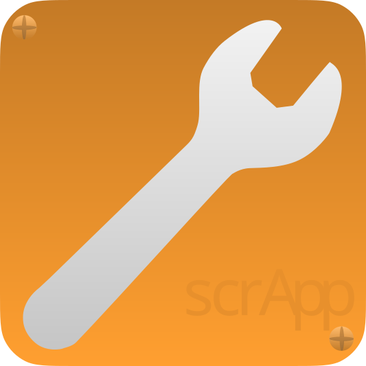

ABOUT
DOWNLOAD

SCRAPP
 Newsletter
Newsletter
 Kernel 17
Kernel 17
What Is Scratches?
Scratches is an operating system made in scratch, primarily developed by
GUZEG.The latest version is High Mountain, which you can download
here.Why Choose Scratches?
Scratches is built for all your needs. built with cutting edge software,
Scratches will do whatever you need it to, whether that be business, home, gaming,
or even your niche hobbies.
Why Develop For Scratches?
Scratches gives you a tools to develop software from the simplest command to the most complex system.
(for more information, visit
https://scrapp-mz.github.io/)